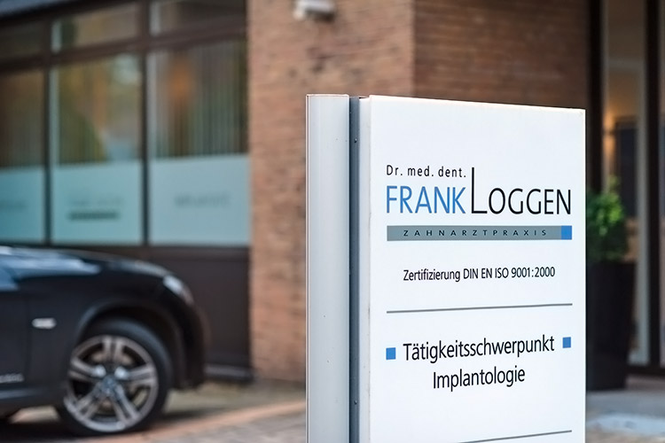

Ihr Lächeln in besten Händen
Modernste Zahnmedizin ohne Kompromisse: abdruckfrei dank 3D-Intraoralscan, Pionier der 3D-navigierten Implantologie und ISO-zertifizierte Qualität — persönlich, ehrlich und mit Zeit für Sie.

Abdruckfreie Praxis
Kein Würgereiz, keine Abformmasse: Mit dem modernsten 3D-Intraoralscanner erfassen wir Ihre Zähne digital — die präzise Grundlage für Zahnersatz und Schienen.
Der herkömmliche Abdruck entfällt vollständig — angenehm und in wenigen Minuten erledigt.
Digitale Modelle mit höchster Passgenauigkeit für Kronen, Brücken und Schienen.
Daten gehen direkt ins Labor — kürzere Wege, weniger Termine, bessere Ergebnisse.
Gute Gründe für Ihr Vertrauen
Seit über 25 Jahren behandeln wir Patientinnen und Patienten aus Bissendorf, Osnabrück und Melle — nach dem Grundsatz: erst zuhören und ehrlich beraten, dann behandeln.
- Pionier seit 2008: 3D-navigierte Implantologie mit minimal-invasiver Schlüsselloch-Technik
- Abdruckfreie Praxis: modernster 3D-Intraoralscan für Zahnersatz und Schienen
- Alles unter einem Dach: DVT-3D-Röntgen und digitale Diagnostik direkt vor Ort
- Zertifizierte Qualität: Qualitätsmanagement nach DIN EN ISO 9001
- Ihre Zeit zählt: strukturierte Termine, maximal 15 Minuten Wartezeit
- Für Angstpatienten: einfühlsame, schonende Behandlung in ruhiger Atmosphäre

„Vertrauen durch Kommunikation — wir nehmen uns die Zeit, die Ihre Gesundheit verdient."
Dr. med. dent. Frank Loggen
Moderne Zahnmedizin — persönlich für Sie
Pionier seit 2008: minimal-invasive Schlüsselloch-Technik mit DVT-Planung.
3D-Volumentomographie direkt in der Praxis — präzise und strahlungsarm.
Veneers, Vollkeramik und metallfreie Füllungen für ein natürliches Lächeln.
Professionelle Zahnreinigung und Recall-System für lebenslang gesunde Zähne.
Individueller, vollkeramischer Zahnersatz aus deutschem Meisterlabor.
Terminvereinbarung flexibel nach Absprache — online oder telefonisch.
Sprechzeiten & Erreichbarkeit
Dienstags und donnerstags bis 20 Uhr — ideal für Berufstätige. Eine individuelle Terminvereinbarung ist jederzeit möglich, telefonisch oder direkt online über Dr. Flex.